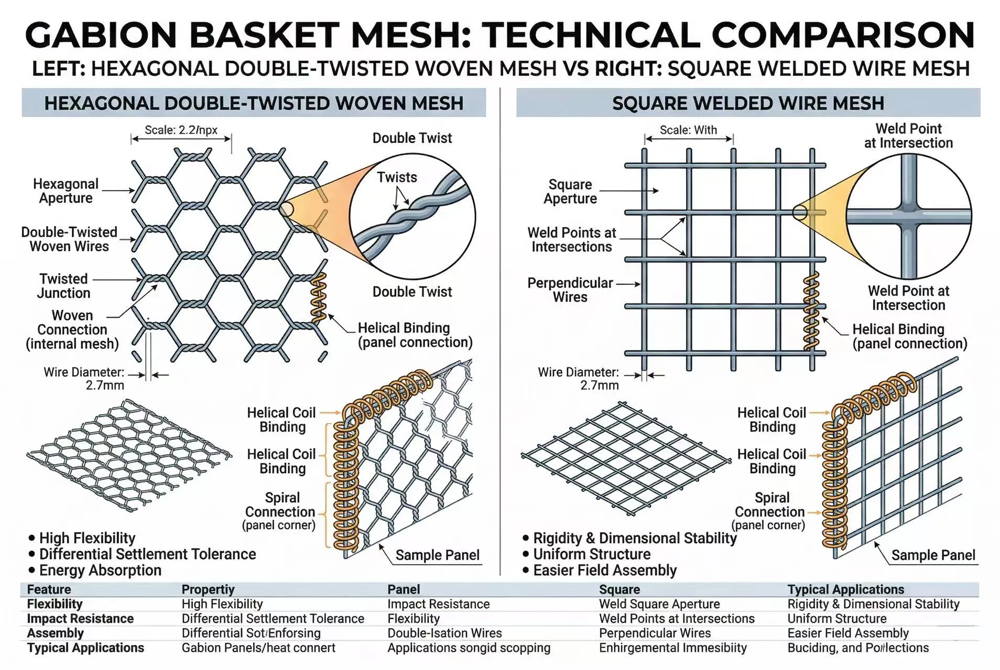
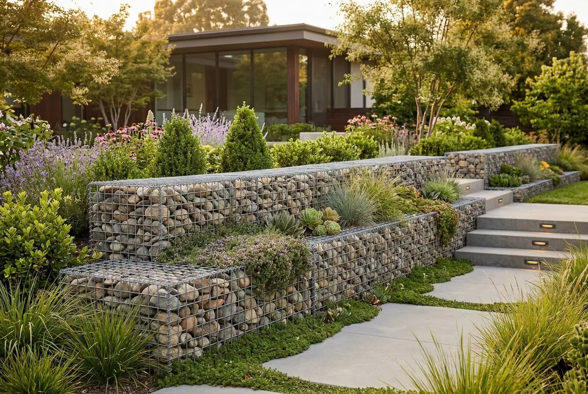

When engineers specify gabion baskets for erosion control, retaining walls, or landscaping, they face a critical decision: welded or twisted (woven) gabion baskets? This choice impacts structural integrity, installation efficiency, lifespan, and cost. This comprehensive comparison helps you decide.
Understanding Gabion Basket Construction
Twisted Gabion Baskets (Hexagonal Mesh)
Twisted gabions use hexagonal wire mesh formed by twisting wire pairs. They are flexible, adaptable, and have been used for over a century. Wire thickness ranges from 2.0-4.0mm, with openings of 60x80mm or 80x100mm.
Welded Gabion Baskets (Rigid Mesh)
Welded gabions feature rigid wire mesh panels with welded intersections. Grid pattern ranges from 50x50mm to 100x100mm, wire diameter from 3.0-6.0mm. Available with hot-dip galvanized or Galfan coating.
Structural Performance Comparison

Load-Bearing Capacity
Welded: Rigid structure with even load distribution. Twisted: Flexible mesh, good for ground movement. Winner: Welded for vertical walls.
Panel Rigidity and Shape
Welded gabions maintain precise dimensions and clean lines. Twisted gabions are prone to variation. Winner: Welded for architectural aesthetics.
Deformation Resistance
Welded gabions resist bulging under load. Twisted gabions tolerate seismic movement better. Winner: Depends on application.
Durability and Corrosion Resistance

| Coating | Twisted | Welded | Lifespan |
|---|---|---|---|
| Electro Galvanized | 8-12 g/m² | 8-12 g/m² | 2-5 years |
| Hot-Dip Galvanized | 40-60 g/m² | 40-60 g/m² | 10-15 years |
| Heavy Galvanized | 200-300 g/m² | 200-300 g/m² | 20-30 years |
| PVC Coated | 0.5mm | 0.5mm | 30-50 years |
| Galfan (5% Al-Zn) | Available | Available | 25-40 years |
Winner: Welded gabions offer superior long-term durability due to less wire surface area and sacrificial weld points.
Installation Efficiency and Labor Costs
Welded Gabions: Flat rigid panels unfold quickly. 30-40% faster installation, lower labor cost. Holds shape during filling.
Twisted Gabions: Folded mesh requires more assembly and skill. Longer installation time increases labor cost.
Winner: Welded gabions for faster, more efficient installation.
Cost Analysis: Initial vs Lifecycle Value

| Cost Factor | Twisted | Welded |
|---|---|---|
| Initial Material | $45-65/m³ | $55-80/m³ |
| Installation Labor | $25-35/m³ | $15-25/m³ |
| Maintenance (30yr) | $15-25/m³ | $5-10/m³ |
| Total Lifecycle | $85-125/m³ | $75-115/m³ |
Winner: Welded gabions provide better long-term value despite higher initial cost.
Application Recommendations
Choose Welded Gabions For:
- Architectural and landscaping projects
- Walls over 3m height
- Rapid installation needed
- Precise dimensions and clean lines
- Long-term durability priority
Choose Twisted Gabions For:
- Flexible and dynamic environments
- Riverbank and coastal defense
- Seismic zones
- Large-scale civil engineering
- Budget-constrained projects
Technical Specifications
| Specification | Twisted | Welded |
|---|---|---|
| Standard Mesh | 60x80, 80x100mm | 50x50, 75x75, 100x100mm |
| Wire Diameter | 2.0-4.0mm | 3.0-6.0mm |
| Tensile Strength | 350-550 MPa | 400-600 MPa |
| Common Sizes | 2x1x1m, 3x1x1m | 1x1x1m, 2x1x1m |
Decision Framework
Choose Welded If:
- Wall height exceeds 2m
- Appearance matters
- Rapid installation needed
- Budget allows higher initial cost
- Long-term durability is the priority
Choose Twisted If:
- Large-scale civil engineering
- Ground movement expected
- Budget constraints exist
- Flexibility is beneficial
- Short-term or temporary application
Need a chain-link fence replacement or upgrade? At Kestrel Metal, we supply premium galvanized and PVC-coated chain link fencing along with complete fittings and accessories. Our experienced team provides technical support and competitive pricing with worldwide shipping. Request a Quote today — we respond within 24 hours with detailed specifications and pricing for your project.